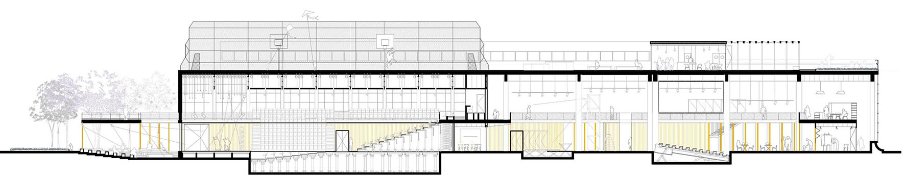
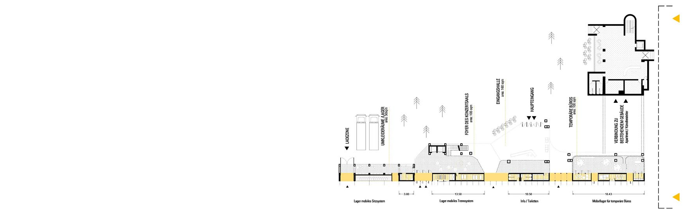
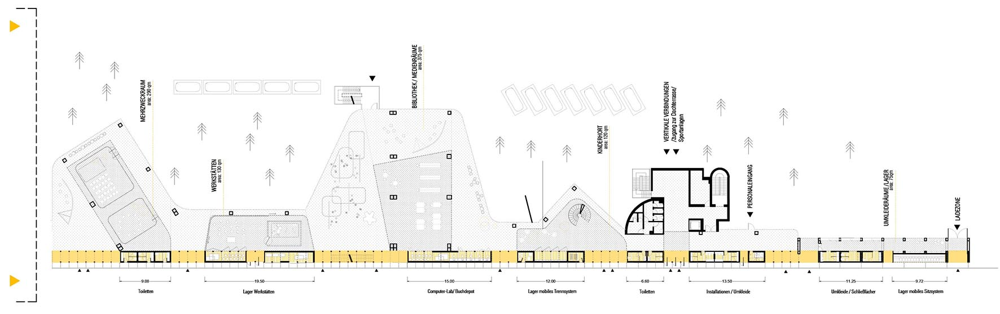
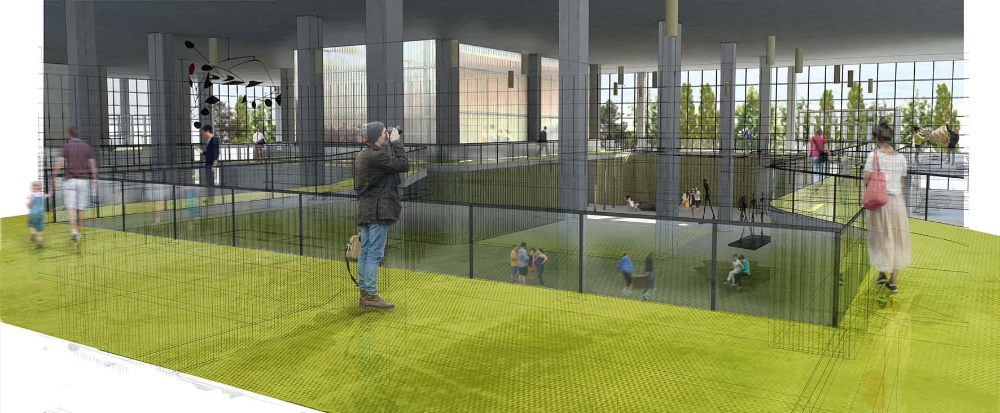

Ausgebreitete Axonometrie

Querschnitt

Zugangstockwerk

Schlinge Program

Schlinge Program_2

Innenansicht
Die wichtigste Prämisse des Projekts ist das Bewahren des Bestehenden. Sowohl die Struktur als auch die Mauern des Gebäudes werden aufrechterhalten, sekundäre Elemente werden geordnet bzw. beseitigt: Decken, Zwischenwände, Installationen, Toiletten usw. Es entsteht ein diaphaner Raum, nur unterbrochen durch das Raster der Pfeiler und Fassaden, wo ein neues, flexibleres organisches Element hinzukommt.
Die Neuplanung von Space to Culture hat als Ausgangs- und Bezugspunkt eine Schlinge. Dieses loop erzeugt einerseits für Besucher und Nutzer einen Weg durch das Gebäude, und andererseits begrenzt es die neuen Nutzungen im Zwischenraum zwischen loop und Außenmauer bzw. in den vom loop umschlossenen Räumen.
Im Erdgeschoss wird die Schlinge dicker, um ergänzend zu den Räumen Lager, Toiletten, Kassen usw. aufzunehmen. Dank der Konzentration von ständigen Nutzungen bleiben die vom Band umschlossenen Räume diaphan, und so kann man schnell und flexibel auf veränderte Nutzungen eingehen.
Die Vergänglichkeit der Räume wird bewusst eingesetzt, damit das Gebäude „lebendig“ bleibt und möglichst lang „funktioniert“, denn die Bedürfnisse der Nutzer gestalten es zu verschiedenen Zeitpunkten.
Das loop ist gleichzeitig Architektur und Weg, Verbindung und Trennung. Es schafft die Grundlagen für einen Raum / eine Bühnendekoration, wo eine sich bewegende Performance abläuft. Ein ausreichend anpassungsfähiger Raum, um improvisierte und unvorhergesehene Situationen aufnehmen zu können.
Die Verteilung der für das Gebäude geforderten Nutzungsplanung fußt auf der Größe der Räume, der Beziehung zwischen Räumen und der Flexibilität der Räume.